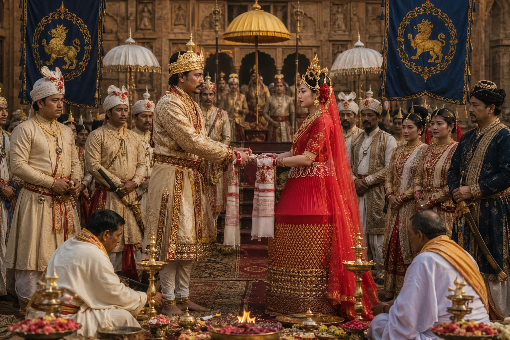

Royal Wedding of Rajeswar Singha and Princess Kuranganayani
1768 · The Tungkhungia kings

In gratitude, King Jai Singh gives his heroic daughter Princess Kuranganayani in marriage to Rajeswar Singha, cementing eternal Ahom-Manipuri ties.
Sources have not yet been catalogued for this record.
People: Bhagyachandra (Jai Singh), Kuranganayani, Rajeswar Singha (Suremphaa)